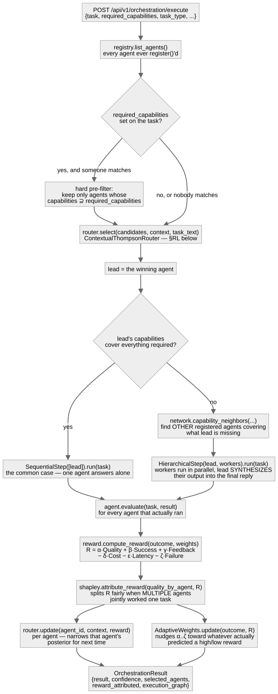

Kalkee's agents — what each one is, and how a task actually flows through them
Nine agents ship registered by default (app/framework/bootstrap.py).
This is the catalog: what each one is, exactly what happens in each of
its six pipeline steps, and how a task moves through the shared
orchestration machinery around all of them. For how to build a new
one, see README_NEW_AGENT_GUIDE.md — this file is the "what already
exists" companion to that "how to add your own" one. For the routing
math itself, see README_RL_ALGORITHMS.md.
The one interface every agent implements
app/framework/agent_base.py's Agent is abstract over six steps.
Agent.run(task) always calls them in this fixed order — the
orchestrator never needs to know which steps a given agent actually
does interesting work in:
understand(task) → parse/interpret the task into whatever this
agent needs internally
plan(task, understanding) → decide the concrete steps/tool calls
execute(task, plan) → do the real work (call a model, call a tool,
scan a file) — almost always where the
interesting work actually happens
validate(task, result) → check the raw result for correctness/safety
BEFORE it's phrased as a reply
respond(task, validated) → render the final AgentResult
evaluate(task, result) → OPTIONAL — self-assessed quality in [0,1],
default = confidence if ok else 0.0
A simple agent can make understand/plan/validate near-identity
passthroughs (most of the catalog below does) and put all the real
logic in execute(). A few — CodingAgent, the three security agents —
do genuine work in validate()/evaluate() too; those are called out
below.
Every agent publishes an AgentMetadata: agent_id, capabilities
(a frozenset[str] the capability pre-filter matches against),
supported_tasks, cost_per_call_usd, a LatencyProfile, and a
reliability_score — the cold-start prior its bandit posterior is
seeded from before any real feedback exists (see below). None of this
metadata is enforced by a schema beyond the dataclass itself; it's what
the router reads to score an agent it otherwise knows nothing about.
One task's actual journey (app/framework/orchestrator.py)

Three things worth being explicit about:
- The capability pre-filter runs BEFORE the bandit ever scores anyone. Without it, an agent with zero relevant capability could still win purely on reliability/cost/latency (those are only part of the utility sum) — which both wastes a hierarchical-delegation hop and teaches the bandit the wrong lesson about who's actually good at this task type.
- Delegation is a property of the task, not hard-coded per domain.
If the winning agent's own
capabilitiesalready cover everything the task asked for, it just runs alone (SequentialStep, one agent, the common "simple question" case). Only when something's missing doesHierarchicalStepkick in: workers matching the missing capability run in parallel (ParallelStep), and the lead's ownexecute()/respond()gets their output appended to the task text — a generic "Planner → Specialists → Synthesizer" shape, not a shape special-cased per agent. - Reward attribution is Shapley, not "give it all to the winner."
When a
HierarchicalStepran more than one agent,shapley.pysplits the single computed rewardRacross every agent that contributed, using the same cooperative-game-theory value (Shapley, 1953) that gets a shout-out inREADME_RL_ALGORITHMS.md. A lead that did nothing but paste a worker's answer verbatim gets less credit than one whose synthesis genuinely improved on the raw worker output.
app/framework/workflow.py also defines ParallelStep/ConsensusStep
(N independent takes, vote or pick highest-confidence) and
FallbackStep/RetryStep (priority order, first success wins) as
composable primitives — orchestrator.execute() only actually reaches
for SequentialStep/HierarchicalStep today; the others are available
to a caller building a custom Workflow by hand.
The 9 agents shipped by default
agent_id |
Real capability | Cost/call | Reliability prior |
|---|---|---|---|
pm-agent |
Wraps the entire pre-existing PM chatbot verbatim | $0.002 | 0.85 |
pm-agent-adk |
Same PM chatbot, pinned to the Google ADK track specifically | $0.002 | 0.85 |
openclaw-agent |
Direct public Claude API, no tools | $0.003 | 0.75 |
coding-agent |
Code generation + real ast.parse validation |
$0.004 | 0.70 |
mcp-utility-agent |
Tool set is ENTIRELY MCP-sourced | $0.001 | 0.70 |
langchain-research-agent |
Real langchain_core Runnable + real BaseRetriever RAG |
$0.002 | 0.70 |
code-security-agent |
Deterministic Python vulnerability pattern scan | $0.003 | 0.75 |
supply-chain-agent |
Real OSV.dev dependency vulnerability lookups | $0.003 | 0.70 |
cloud-config-agent |
Deterministic Dockerfile/K8s/Terraform misconfig scan | $0.003 | 0.70 |
pm-agent — the pre-existing PM chatbot, wrapped
app/framework/agents/pm_agent.py. Proves Kalkee is additive, not a
rewrite: every prompt in CHAT_PROMPTS.md, every test in
tests/test_agent_flows.py, still goes through the exact same
get_agent(framework).handle_message(...) call this wrapper delegates
to — nothing about the PM domain's own 17-step
native_agent.handle_message pipeline (perceive → resolve → confirm →
execute → format) is touched or reimplemented.
understand/plan— near-identity; the PM chatbot's own internal pipeline already does perceive/resolve in one call.execute— callsget_agent(self.framework).handle_message(user, session_id, task.text, preferred_provider=...).self.frameworkisNonehere (this deployment's configured default track).validate— a passthrough;native_agent's own input/output guards already ran insideexecute().respond— confidence is0.4if the reply is a pending confirmation (a yes/no still outstanding),0.85otherwise.
pm-agent-adk — the same chatbot, pinned to one framework track
Same PMAgent class, constructed with framework="adk" — Google ADK's
Runner/LlmAgent machinery exposed as its OWN independently-routable,
independently-scored Kalkee agent, rather than a query-param buried
inside pm-agent. This is what lets the bandit directly compare ADK's
real-world latency/reliability against native/langgraph's, agent vs.
agent, instead of only ever seeing "pm-agent" as one blended number.
openclaw-agent — general-purpose, no tools
agents/openclaw_agent.py. "Open" because it talks to Claude's genuinely
public API (llm/providers.py's AnthropicNative, registered as the
"claude" provider) — proof the model-abstraction layer is reusable by
a plain, tool-free agent as easily as by the PM domain's tool-calling
one, and it degrades through the normal provider chain if
CLAUDE_API_KEY is unset, same as every other rung.
plan— one system prompt ("you have no tools, never claim to have taken an action") + the user's text.execute—get_llm_client("realtime", preferred="claude").chat(...). One model call, nothing else.respond— confidence0.8on success,0.0and an honest "every model rung failed" message on total failure.
coding-agent — the framework's own worked "new domain" example
agents/coding_agent.py is literally what README_NEW_AGENT_GUIDE.md
walks through building — the entire integration surface for a
brand-new domain is one file, registered the same way pm-agent is.
execute— one call toget_llm_client("delay_ok", ...)with a system prompt asking for a fenced```pythonblock.validate— real work, not a stub: extracts every fenced Python block from the reply and runs it throughast.parse— a genuine syntax check. On a syntax error, it retries the model ONCE with the parse error appended (the same "retry once on a validation failure" shapenative_agent.py's ownoutput_guarduses for tool-call validation, reapplied here for code validity).respond— confidence0.85if the retried-or-original code parses clean,0.4if it still doesn't,0.0on a hard model failure.evaluate— overridden, not the base-class default: a syntactically valid block is a stronger self-assessed quality signal than confidence alone, so this halves confidence whensyntax_okis false rather than trusting the raw number.
mcp-utility-agent — proving MCP is a first-class capability source
agents/mcp_utility_agent.py. Its entire tool set comes from
agent/mcp_client.py's MCP_SERVERS config — nothing PM-specific.
Bundled default is the offline utility_server.py example
(get_current_datetime, days_between); point MCP_SERVERS at any
real external MCP server and this agent gains its tools with zero
code changes here — tools = tuple(mcp_client.mcp_tool_names()) in
__init__ picks them up automatically. This exists specifically so MCP
tools aren't only ever seen merged into pm-agent's much larger tool
list, where it'd be easy to miss that MCP is a real, general capability
source and not a PM-only add-on.
execute—client.chat(..., mcp_client.mcp_tool_specs())— ONLY the MCP tool specs, deliberately nevertools.openai_tool_specs()'s full PM set.validate— if the model called a tool, actually callsmcp_client.call_mcp_tool(...)and catches a failure into a "Sorry — that failed" string rather than raising.
langchain-research-agent — a real LangChain Runnable + real RAG
agents/langchain_research_agent.py, wrapped via
langchain_adapter.LangChainRunnableAgent. Not an adapter module sitting
unused — an actual RunnableLambda | ChatPromptTemplate | RunnableLambda
pipeline, built with real langchain_core imports and a real | pipe.
It also builds a genuine langchain_core.retrievers.BaseRetriever over
Kalkee's own in-memory RAG store (vector_store_to_retriever), seeded
from a tiny 3-fact knowledge base about Kalkee's own routing math — so
retrieval demonstrably changes the answer, not just a decorative
BaseRetriever nobody calls.
- The
RunnableLambdain the middle bridges tollm/router.py's own provider chain rather than a LangChain chat-model integration (ChatOpenAI/ChatAnthropic) — keeps the example dependency-light while still being swappable for a real LangChain model wrapper without touching how this agent is registered or routed. - Uses
Agent's six-step interface only indirectly;LangChainRunnableAgent(agent/langchain_adapter.py) is the thin bridge that makes aRunnable.invoke()satisfy Kalkee'sexecute()contract.
code-security-agent, supply-chain-agent, cloud-config-agent — deterministic first, LLM second
All three share one rule, documented once in
agents/security_findings.py: real detection happens first
(regex pattern matching over real source text, or a real query against
a real vulnerability database), and the LLM is only ever handed the
resulting fixed Finding list to summarize — it can never invent,
add, or omit a finding. format_findings_for_prompt() is the ONLY
thing the LLM ever sees about what was found, so the summary can't
drift from what was actually detected. See README_CYBERSECURITY.md
for the full threat model this backs.
code-security-agent— six line-based regex rules (eval/exec,shell=True,os.system, unsafepickle/yaml.load, weakmd5/sha1hashing) plus a hardcoded-secret pattern, scanned against either a real file/directory underRAG_INGEST_DIR(path-traversal guarded viadocument_pipeline.resolve_within(), shared with RAG ingestion) or pasted code intask.text. Known, stated limitation: line-based regex over raw text, not a real AST analysis — a rule's own docstring mentioningeval()in prose can false-positive the same way a real usage would.supply-chain-agent— parses arequirements.txt-shaped manifest, and for every EXACTLY pinned dependency (name==1.2.3), callsquery_osv()— a real HTTP POST toapi.osv.dev, the same public vulnerability databasepip-audit/osv-scanneruse. An unpinned dependency is reported as skipped with a reason, never silently ignored or guessed at (OSV.dev needs an exact version to check).cloud-config-agent— seven format-agnostic regex rules across Dockerfile/compose/Kubernetes/Terraform (privileged containers,0.0.0.0/0,hostNetwork:true, root user, public-access flags, disabled encryption,:latesttags) plus a missing-USER-directive check specific to Dockerfiles. No live cloud-provider API calls — scans the config FILES that define your infrastructure, the same static-analysis approachcheckov/tfsecuse. Validated for real against this repo's owndeploy/Dockerfile.*.
All three additionally override evaluate(): a scan that actually
checked something (scan.scanned non-empty) keeps full confidence; one
that skipped everything gets it halved — "found nothing" and "checked
nothing" are different outcomes, and the reward signal should say so.
Registering an agent beyond these 9
Two paths, both landing in the same registry/router/feedback machinery
above — see README_NEW_AGENT_GUIDE.md for the full walkthrough:
- In-process —
registry.register(MyAgent())+network.add_agent(MyAgent().metadata), the exact patternbootstrap.pyuses for all 9 above. One new line, nothing existing touched. - Runtime, no code deploy —
POST /api/v1/agents/registerwith awebhook_url. Kalkee builds aRemoteHttpAgent(agents/remote_agent.py) proxy:execute()POSTs{task_id, text, session_id, metadata}to your endpoint and expects{text, ok, confidence}back. Your agent can be written in any language, hosted anywhere — Kalkee never needs your source, and it still gets scored by the identical Thompson Sampling bandit and Shapley-attributed reward every in-process agent does.